01기기 목록
{kind=link}
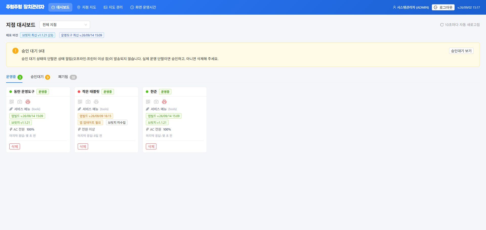
{kind=link}
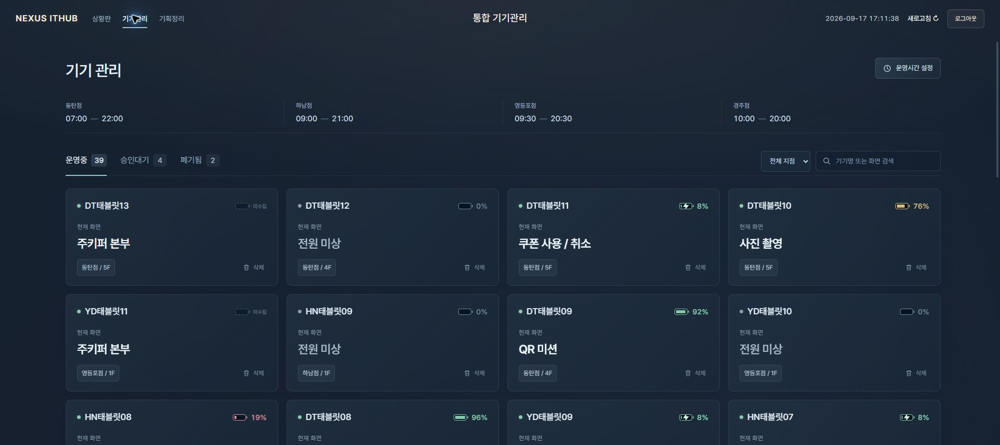
변경점지점별 필터 설정 및 검색기능 추가, 상세보기 방법 변경
기대효과기기 이름과 현재 화면을 빠르게 식별.
필요 사항
기존 활용
- 기기 목록기존 목록 API 연결
- 폐기 처리기존 삭제 후 폐기 목록 이동 방식 유지
추가 개발
- 충전 상태목록 응답에 충전 여부 추가


변경점지점별 필터 설정 및 검색기능 추가, 상세보기 방법 변경
기대효과기기 이름과 현재 화면을 빠르게 식별.
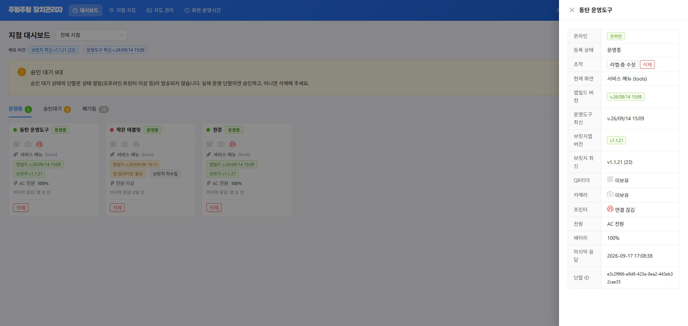
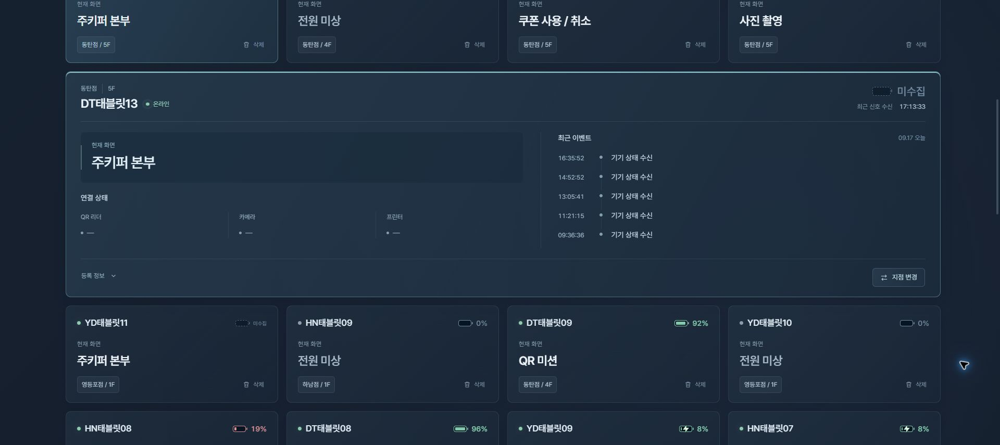
변경점카드를 눌러 하단에서 상세정보 및 정보 변경
기대효과목록을 오가지 않고 문제 기기 확인.
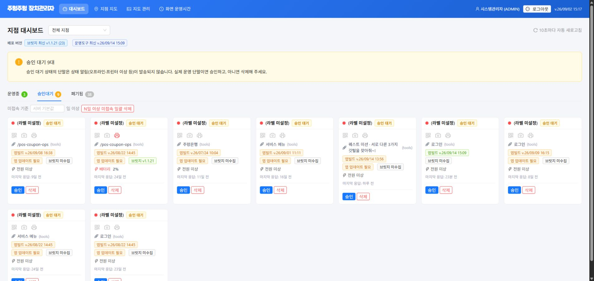
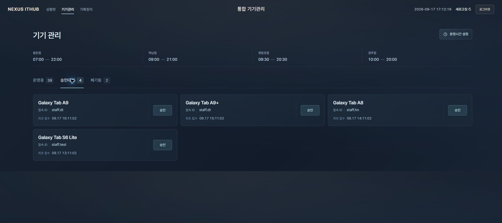
변경점정보 간략화 및 가독성 증진
기대효과어떤 기기가 언제 들어왔는지 바로 확인.
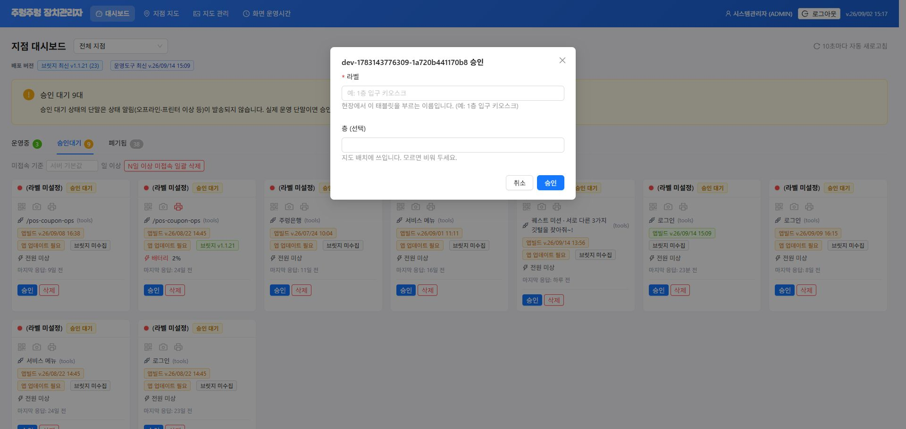
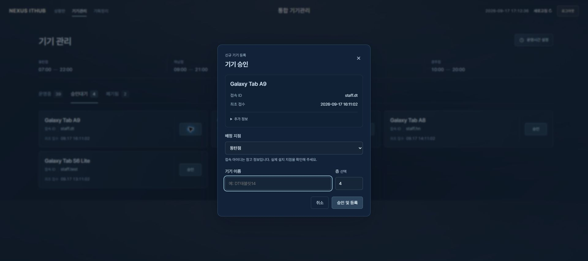
변경점지점과 이름을 지정한 뒤 승인. 승인 직후 지도에 반영.
기대효과잘못된 지점 배정을 줄이고 곧바로 모니터링 시작.
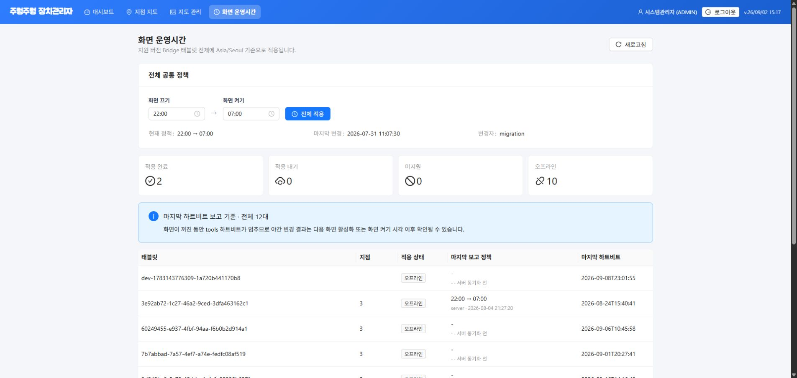
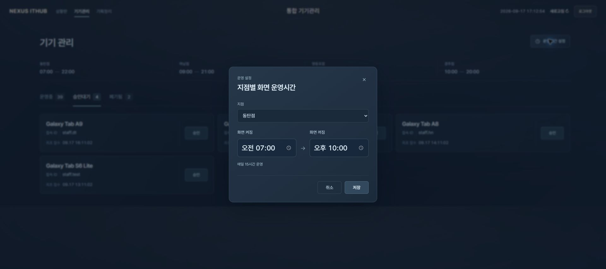
변경점공통 운영시간을 지점별 운영시간으로 변경.
기대효과지점마다 다른 개점과 마감 시간에 맞춰 운영.
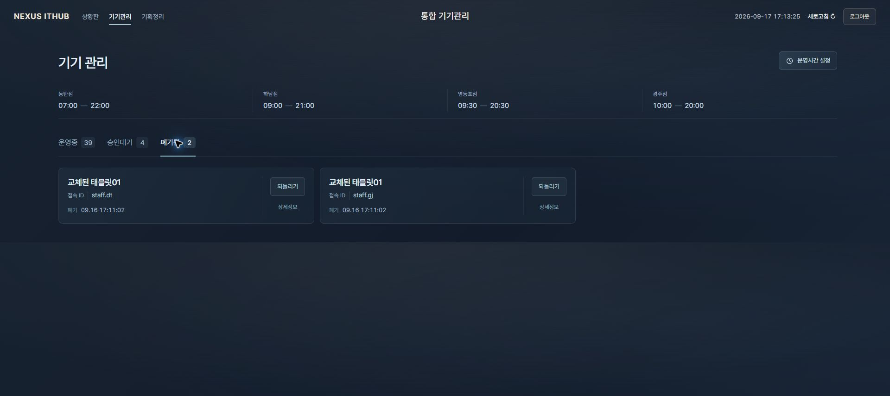
변경점상세정보와 되돌리기 버튼 분리. 복구 결과는 지도에도 반영.
기대효과기기를 확인한 뒤 운영 목록으로 복귀.
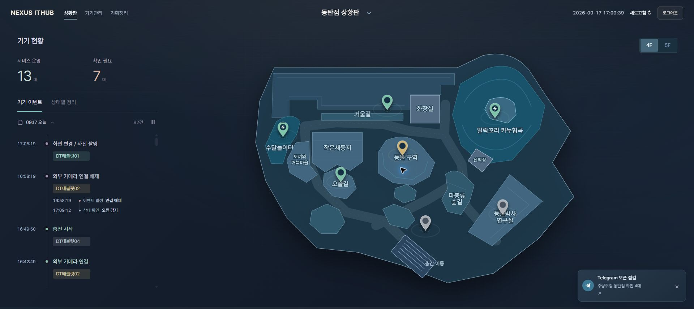
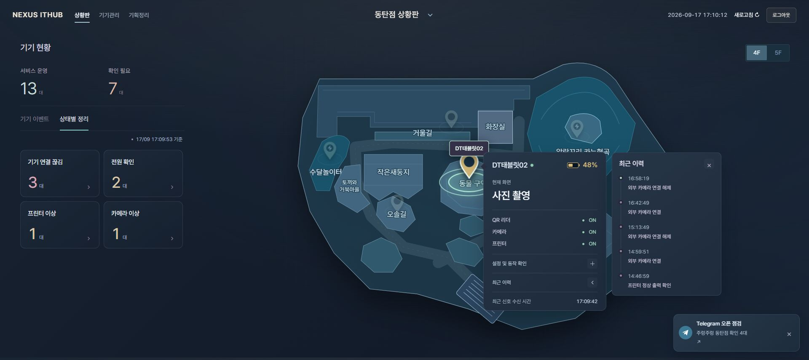
추가 기능문제 발생과 변경 이력을 15초마다 갱신해 지도에서 직관적으로 확인. 기기 상태는 30초마다 갱신하는 시안.
기대효과어느 기기에 무슨 일이 있었는지 한 화면에서 파악.
새 항목은 등장 효과로 구분. 같은 이벤트의 중복 표시 방지.
해당 층과 핀 강조. 현재 상태와 최근 이력 5건 확인.
날짜별 이력 조회. 해결된 문제도 기록 유지.
같은 문제의 후속 결과인지 확인한 뒤 발생과 복구 연결.
서비스 운영은 등록 기기 수, 확인 필요는 문제 기기 수. 통신이 끊기면 회색 핀과 마지막 수신값 표시.
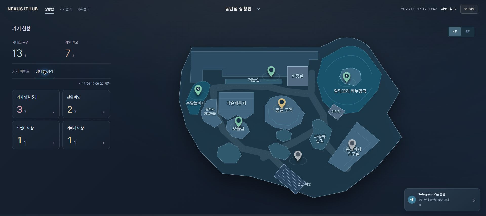
추가 기능연결 끊김, 저전력, 장치 오류별로 기기를 모아 표시.
기대효과긴 이벤트 목록 대신 지금 확인할 문제부터 선택.
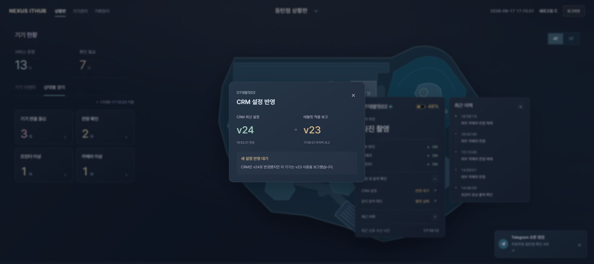
추가 기능CRM 설정과 태블릿에 실제 적용된 설정을 비교.
기대효과이전 설정을 사용 중인 기기를 찾아 확인.
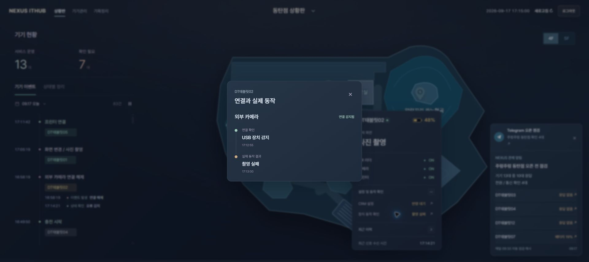
추가 기능장치 연결과 촬영 및 출력 결과를 따로 확인.
기대효과연결은 됐지만 실제 작업은 실패한 상황 확인.
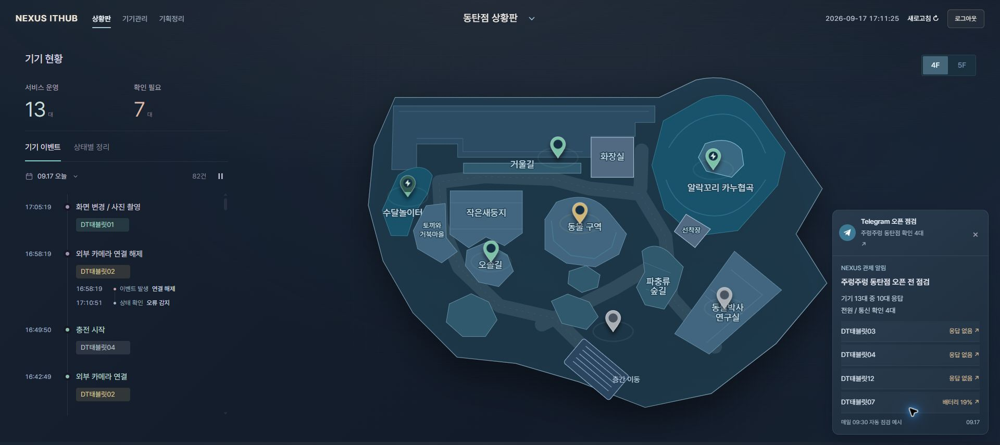
추가 기능매일 지점별 운영 시작 10분 전, 서버에서 기기 상태를 점검하고 확인할 기기를 넥서스 아이티허브 담당자에게 Telegram으로 자동 전송.
기대효과상황판을 열어두지 않아도 오픈 전 점검 대상 확인.
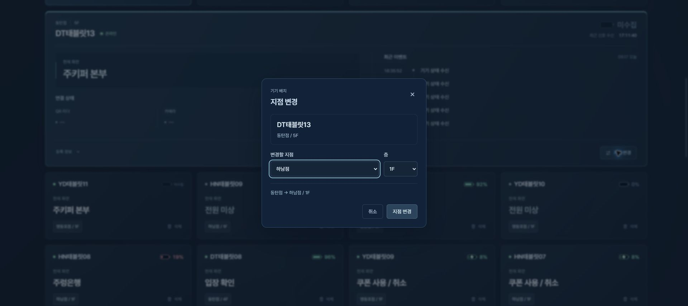
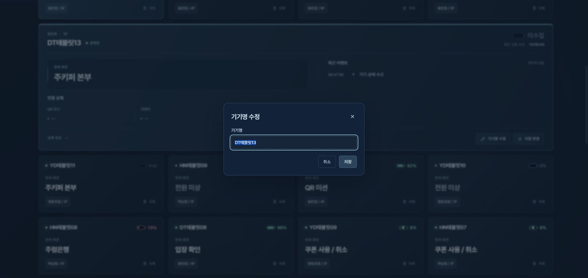
추가 기능기기 상세에서 소속 지점이나 이름 수정.
기대효과기기를 다시 등록하지 않고 이동과 이름 변경 처리.
{kind=link}
{kind=link}
{kind=link}
{kind=link}
{kind=link}
{kind=link}
{kind=link}
{kind=link}
{kind=link}
{kind=link}
{kind=link}
{kind=link}
{kind=link}
{kind=link}
{kind=link}
{kind=link}
{kind=link}